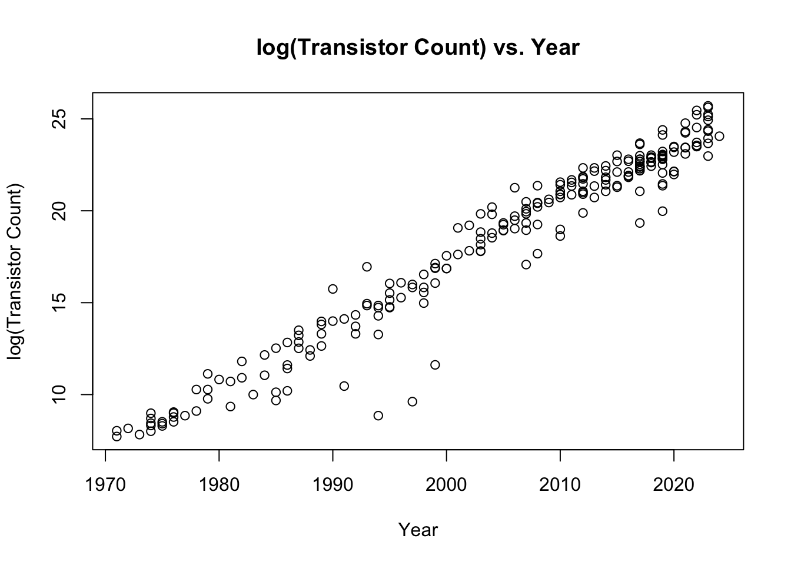

transistor <- read.csv("./Moores Law Data.csv", header = TRUE)
transistor$logC <- log(transistor$TransistorCount)
plot(
x = transistor$Year,
y = transistor$logC,
main = "log(Transistor Count) vs. Year",
ylab = "log(Transistor Count)",
xlab = "Year"
)